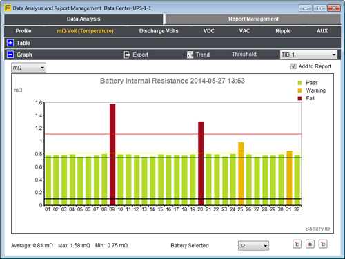
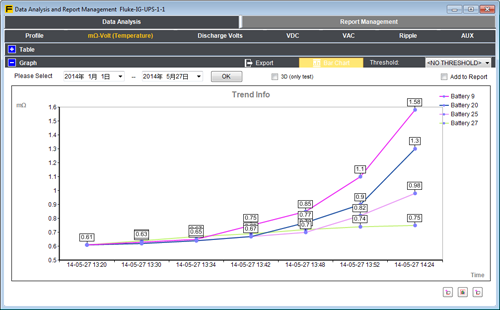
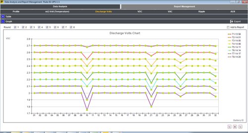
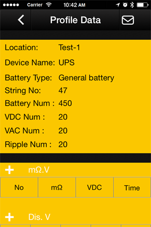
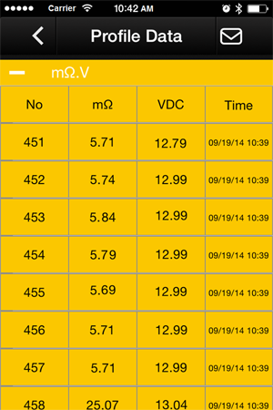

|
|
|
La complexité de test réduite, le processus simplifié et une interface utilisateur intuitive facilitent encore plus l'emploi quand il s'agit de tester les batteries. - L'outil de test idéal pour l'entretien, le dépannage et le contrôle de performance de batteries stationnaires individuelles et des groupes de batteries utilisés par les applications de sauvegarde critiques.
- L'interface utilisateur intuitive, la conception compacte et la construction robuste garantissent des performances, une fiabilité et des résultats de test optimaux.
- Couvre un large éventail de fonctions de test de batterie allant de la tension DC et des tests de résistance jusqu'aux tests complets de la condition en utilisant des tests de fonction de chaîne automatisés et le système intégré de mesure de température à infra-rouges de la sonde de test.
- Conçu pour effectuer des mesures sur tous les types de batteries stationnaires.
|
Caractéristiques clés du BT510 de Fluke :- Tension de batterie – Pendant le test de résistance interne, les testeurs de batterie Fluke mesurent également la tension de la batterie testée.
- Tension de décharge – Le mode Décharge recueille la tension de chacune des batteries plusieurs fois à un intervalle défini par l'utilisateur pendant un test de décharge ou de charge. Les utilisateurs peuvent calculer le temps que prend la batterie pour retomber à la tension finale et utiliser ce temps pour déterminer la perte de capacité de la batterie.
- Test de tension d'ondulation – Mesure le composant résiduel AC indésirable de la tension rectifiée dans la charge DC et les circuits d'onduleur. Permet aux utilisateurs de tester les composants AC dans les circuits de charge DC et de trouver une des causes de base de la détérioration de la batterie.
- Modes Mètre et Séquence – Le mode Mètre permet d'effectuer un test ou un dépannage rapide. Dans ce mode, vous pouvez enregistrer et lire les relevés d'une mesure ou d'une séquence temporelle. Le mode Séquence sert aux tâches de maintenance avec plusieurs systèmes d'alimentation et plusieurs séries de batterie. Avant qu'une tâche ne démarre, l'utilisateur peut configurer un profil pour cette tâche pour la gestion des données et la génération de rapport.
- Seuil et avertissement – L'utilisateur peut configurer un maximum de 10 ensembles de seuils et recevoir un message de Réussite/Avertissement/Échec après chaque mesure.
- Test de résistance des jonctions intercellulaires et gestion des données – Mesure la résistance de la connexion intercellulaire entre les batteries d'une chaîne. Une fois les mesures effectuées, le logiciel Fluke Battery Management version 1.0.69 permet d'obtenir un rapport sur la résistance des jonctions d'une chaîne de batteries ou sur l'évolution temporelle des données historiques.
- AutoHold – Lorsque AutoHold est activé, les relevés sont capturés lorsqu'ils restent stables pendant une seconde. Le relevé est libéré dès qu'une nouvelle mesure démarre.
- AutoSave – Lorsque AutoSave est activé, les valeurs mesurées sont enregistrées dans la mémoire interne automatiquement dès qu'un relevé AutoHold est capturé.
- Logiciel Fluke Battery Management – Permet d'importer facilement les données du produit dans un ordinateur. Les données de mesure et les informations sur le profil de la batterie sont enregistrées et archivées grâce au logiciel de gestion et peuvent être utilisées pour effectuer des comparaisons et des analyses de tendance. Toutes les données de mesure, le profil de la batterie et les informations d'analyse peuvent être utilisés pour créer des rapports en toute simplicité.
- Enregistrement complet – Toutes les valeurs mesurées sont automatiquement capturées pendant le test et peuvent être revues sur l'instrument avant d'être téléchargées pour l'analyse instantanée.
- Interface utilisateur optimisée – La configuration rapide et guidée vous permet de capturer les bonnes données à coup sûr.
- Autonomie de la batterie – Batterie au lithium-ion 7,4 V 3000 mAh pour un fonctionnement continu de plus de huit heures.
- Port USB – Pour les téléchargements rapides de données vers le logiciel fourni d'analyse de données et de gestion de rapports.
- Niveau de sécurité le plus élevé du secteur – CAT III 600 V, 1 000 V DC max. homologué pour effectuer des mesures en toute sécurité autour des équipements d'alimentation de batteries.
Caractéristiques clés du BT520 de Fluke : (conçu pour tester les batteries dans les armoires et endroits difficiles d'accès)- Toutes les caractéristiques mentionnées ci-dessus plus
- Ensemble de sondes de test interactives BTL20 équipé de prolongateurs longs et courts de sonde, d'un écran LCD intégré et d'un haut-parleur pour un retour visuel et audio
- Grande sacoche de transport souple
Caractéristiques clés du BT521 de Fluke : (conçu pour les utilisateurs requérant des mesures thermiques)- Toutes les caractéristiques mentionnées ci-dessus1 plus
- Sondes de test intelligentes BTL21 équipées de prolongateurs de sonde longs et courts, d'un écran LCD intégré et d'un haut-parleur pour un retour visuel et audio, ainsi que d'un capteur de température infrarouge intégré pour effectuer des mesures de température au niveau de la borne négative de la batterie à chaque test
- La fonction sans fil est compatible avec l'application mobile Fluke Battery Analyze (Fluke BA Mobile)2
- Afficher le profil et les résultats de test associés enregistrés sur le testeur de batterie
- Envoyer le profil et les résultats de test par e-mail au format CSV
1 BTL20 non inclus avec le BT-521 de Fluke
2 Actuellement non compatible avec l'application Fluke Connect™ Seuils de tension et de résistanceLes testeurs de batterie de Fluke vous permettent de définir rapidement et facilement les seuils inférieurs et supérieurs de mesure, ainsi que les plages de tolérance. Au cours du processus de test, les mesures sont automatiquement comparées aux niveaux de seuil prédéfinis afin de produire l'une des indications suivantes après chaque mesure : RÉUSSITE, ÉCHEC ou AVERTISSEMENT. Un maximum de 10 ensembles de seuils peut être stocké. Les indications de seuil sont déterminées en fonction des critères suivants : | Tension | Résistance | | > Tension plus faible | < Tension plus faible | < Référence | > Référence et
< Référence x
(1 + % Avertissement) | Référence x (1 + Échec) | | Bon | Mauvais | Bon | Avertissement | Mauvais |
Logiciel Fluke Battery ManagementLe logiciel Fluke Battery management vous permet d'importer rapidement et facilement les données du testeur de batterie sur un ordinateur. Les données de mesure et les informations sur le profil de la batterie sont enregistrées et archivées grâce au logiciel de gestion et peuvent être utilisées pour comparer les résultats, passer des relevés de conductance aux relevés de résistances et effectuer des analyses de tendance. Toutes les données de mesure, le profil de la batterie et les informations d'analyse peuvent être utilisés pour créer des rapports en toute simplicité. - Affichage rapide des relevés enregistrés
- Gestion de profil
- Histogramme d'une chaîne de batteries selon les seuils définis par l'utilisateur final
- Tendance historique des données de batterie
- Plusieurs séries de tensions de décharge
- Génération rapide des rapports
- Mise à niveau du microprogramme du testeur de batterie Fluke
- Passez des résultats de mesure de conductance aux résultats de mesure de résistance
 Histogramme d'une chaîne de batteries selon les seuils définis par l'utilisateur  Tendance historique des données de batterie  Plusieurs séries de tensions de décharge Application mobile Fluke Battery AnalyzeLa communication sans fil du BT521 permet de télécharger des données et de les afficher à distance tout en effectuant des mesures via l'application mobile Fluke Battery Analyze (remarque : le BT521 de Fluke n'est pas compatible avec Fluke Connect pour le moment). Avec l'application mobile Fluke Battery Analyze, vous pouvez : - Parcourir les profils
- Consulter les données des séquences de test
- Envoyer les données des séquences de test par e-mail
 Afficher le profil de mesure  Afficher et envoyer par e-mail les données de mesure |
| Fonctions | Plage | Résolution | Précision | BT510 | BT520 | BT521 | | Résistance de la batterie/ Résistance de la jonction1 | 3 mΩ | 0,001 mΩ | 1% + 8 | ● | ● | ● | | 30 mΩ | 0,01 mΩ | 0,8% + 6 | ● | ● | ● | | 300 mΩ | 0,1 mΩ | 0,8% + 6 | ● | ● | ● | | 3 000 mΩ | 1 mΩ | 0,8% + 6 | ● | ● | ● | | V DC | 6 V | 0,001 V | 0,09% + 5 | ● | ● | ● | | 60 V | 0,01 V | 0,09% + 5 | ● | ● | ● | | 600 V | 0,1 V | 0,09% + 5 | ● | ● | ● | | 1 000 V | 1 V | 0,09% + 5 | | | ● | | V a.c. (45 Hz à 500 Hz avec un filtre de 800 Hz) | 600 V | 0,1 V | 2 % + 10 | ● | ● | ● | | Fréquence (affiché en V AC et A AC)2 | 500 Hz | 0,1 Hz | 0,5 % + 8 | ● | ● | ● | | Fluctuation de la tension AC (20KHz max.) | 600 mV | 0,1 mV | 3% + 20 | ● | ● | ● | | 6 000 mV | 1 mV | 3% + 10 | ● | ● | ● | | Adc/Aac (avec l'accessoire Fluke i410) | 400 A | 1:00 AM | 3,5% + 2 | | | ● | | Température | 0°C à 60°C | 1°C | 2°C (4 °F) | | | ● | | Mode Multimètre | 999 enregistrements horodatés pour chaque position de mesure | | Mode séquence | Jusqu'à 100 profils et 100 modèles de profils horodatés (chaque profil contient jusqu'à 450 batteries) | 1 La mesure est basée sur la méthode d'injection AC. Le signal source injecté est < 100 mA, 1 kHz.
2 Niveau de déclenchement V AC : 10 mV, A AC : 10 A |
| Modes de mesure | BT510 | BT520 | BT521 | | Résistance (mΩ) | ● | ● | ● | | Tension de batterie | ● | ● | ● | | Tension DC | ● | ● | ● | | Tension ac et fréquence (Hz) | ● | ● | ● | | Volt résiduel | ● | ● | ● | | Température de la borne négative de la batterie | | | ● | | Courant ac et dc (avec fréquence) | | | ● | | Mode DMM | ● | ● | ● | | Mode séquence | ● | ● | ● | | Mode de mesure de décharge | ● | ● | ● | | Enregistrement automatique des mesures | ● | ● | ● | | Système de communication sans fil | | | ● | | Vue de la mémoire | ● | ● | ● |
| Caractéristiques générales | | Dimensions (H x L x P) | 22 cm x 10,3 cm x 5,8 cm (9 in x 4 in x 2 in) | | Poids | 850 g (1,9 lb) | | Dimensions de l'écran | 7,7 cm x 5,6 cm (3 in x 2,2 in) | | Interface | Mini USB | | Garantie | 3 ans |
| Spécifications des conditions ambiantes | | Température de fonctionnement | 0 °C à 40 °C | | Température de stockage | -20°C à 50°C | | Température de chargement de la batterie Lithium-ion | 0 °C à 40 °C | | Humidité de fonctionnement | Sans condensation (10°C) | | <=HR 80% (de 10°C à 30°C) | | <=HR 75% (de 30°C à 40°C) | | Altitude de fonctionnement | Du niveau de la mer à 2000 mètres | | Altitude de stockage | Du niveau de la mer à 12 000 mètres | | Protection IP | IP40 | | Radio | FCC Classe A | | Vibrations | MIL-PRF-28800F Classe 2 | | Test de chute | 1 mètre | | Coefficients de température | La précision indiquée subit une variation de 0,1 % pour chaque degré Celsius au-dessus de 28°C ou en-dessous de 18°C. | | Conformité aux normes de sécurité | 600 V CAT III | | Compatibilité électromagnétique (EMC) | CEI 61326 | | RoHS | Chine, Europe | | Classe de protection 2 | Degré de pollution II | | Conformité de la batterie | UN38.3 | | UL2054 | | CEI 62133 | | 2G selon CEI 68-2-26, 25G, et 29 |
|
| Modèle | Informations pour la commande | Prix courants | | Fluke BT510 | Le testeur de batterie avancé Fluke BT510
comporte : : - Testeur de batterie
- Pointes de test à 4 fils (jeu)
- BTL10, cordons de mesure de base (jeu)
- TL175 TwistGuard™, cordons de mesure avec pointes réglables
- BP500 batterie lithium-ion.
- BC500, chargeur AC
- Câble mini-USB
- Bandoulière
- Sangle pour ceinture
- Sangle de suspension magnétique
- Logiciel de gestion de batterie FlukeView®
- Sacoche de transport
- Fusibles de rechange (2)
- Résistance d'étalonnage à zéro ohm
| Tarif | | Fluke BT520 | Le testeur de batterie avancé Fluke BT520
comporte : - Testeur de batterie
- Pointes de test à 4 fils (jeu)
- BTL10, cordons de mesure de base (jeu)
- TL175 TwistGuard™, cordons de mesure avec pointes réglables
- BTL20, jeu de sondes de test intelligentes avec prolongateur (sans capteur de température)
- BP500 batterie lithium-ion.
- BC500, chargeur AC
- Câble mini-USB
- Bandoulière
- Sangle pour ceinture
- Sangle de suspension magnétique
- Logiciel de gestion de batterie FlukeView®
- Sacoche de transport
- Fusibles de rechange (2)
- Étiquettes pour batterie
- Résistance d'étalonnage à zéro ohm
| Tarif | | Fluke BT521 | Le testeur de batterie avancé Fluke BT521
comporte : - Testeur de batterie
- Pointes de test à 4 fils (jeu)
- BTL10, cordons de mesure de base (jeu)
- TL175 TwistGuard™, cordons de mesure avec pointes réglables
- BTL21, jeu de sondes de test intelligentes avec prolongateur et capteur de température
- Pince de courant AC/DC i410
- BP500 batterie lithium-ion.
- BC500, chargeur AC
- Câble mini-USB
- Bandoulière
- Sangle pour ceinture
- Sangle de suspension magnétique
- Logiciel de gestion de batterie FlukeView®
- Sacoche de transport
- Fusibles de rechange (2)
- Étiquettes pour batterie
- Résistance d'étalonnage à zéro ohm
| Tarif |
| Test Probes | Prix courants | | Fluke BTL20 | Sondes de test interactives pour l'analyseur de test | Tarif | | Fluke BTL21 | Sondes de test interactives pour l'analyseur de test avec capteur de température | Tarif |
| Cordons de mesure, pointes de touches et pinces pour circuits électronique | Prix courants | | Fluke BT500-PROBETIP | 10 pointes de remplacement pour les sondes BTL10, BTL20 et BTL21 | Tarif |
|
|
|
|
|
|
|
|
|

|